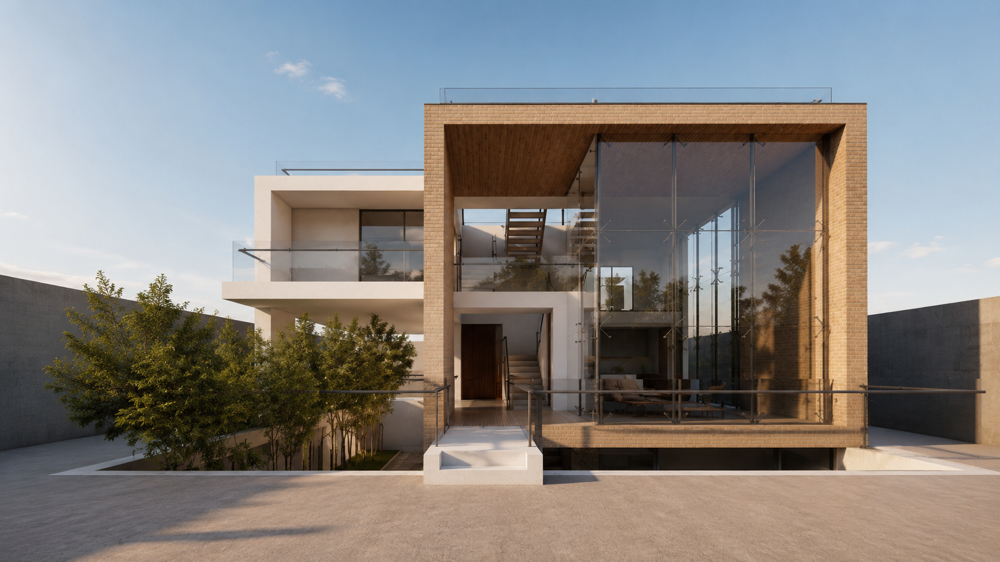
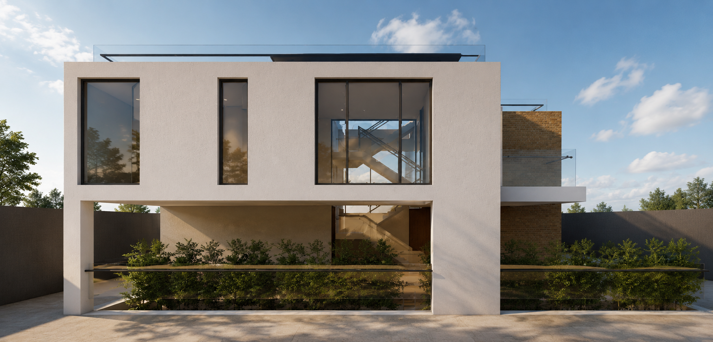
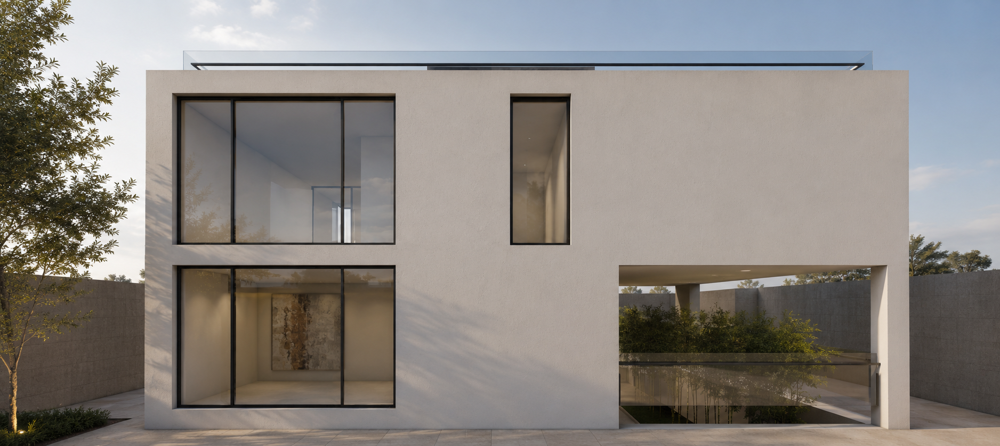
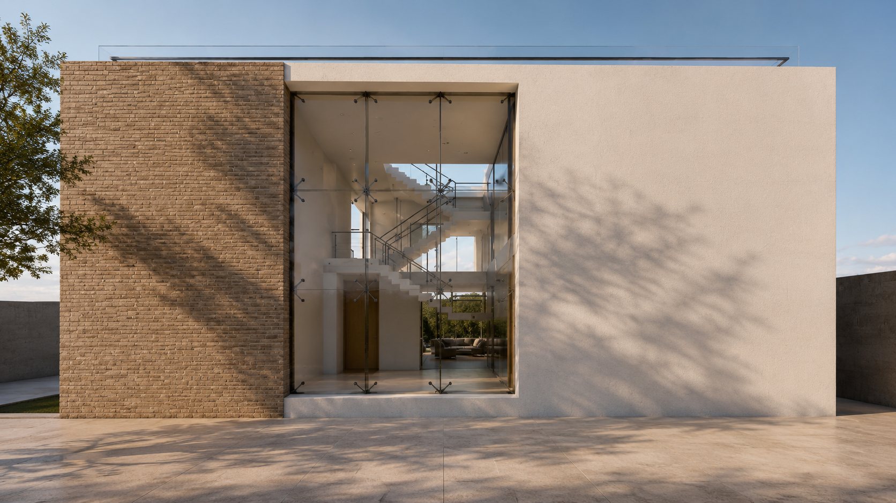
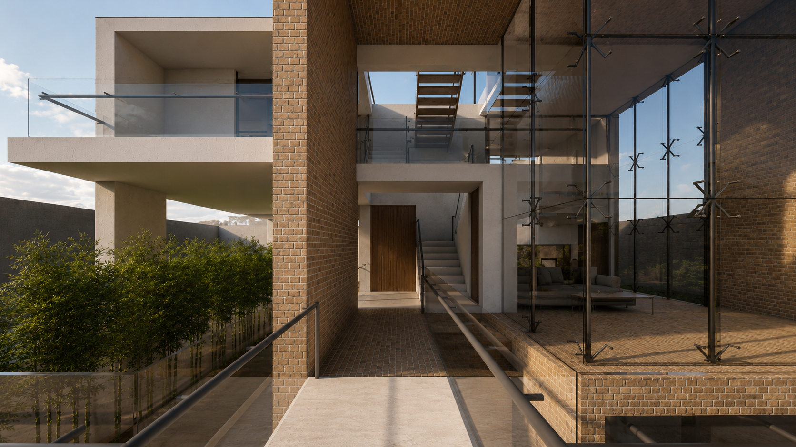
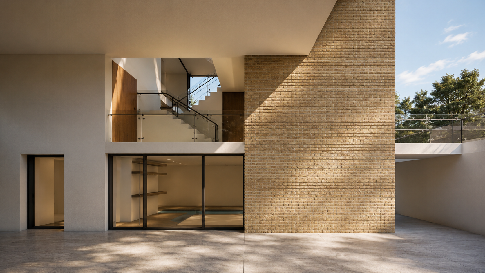
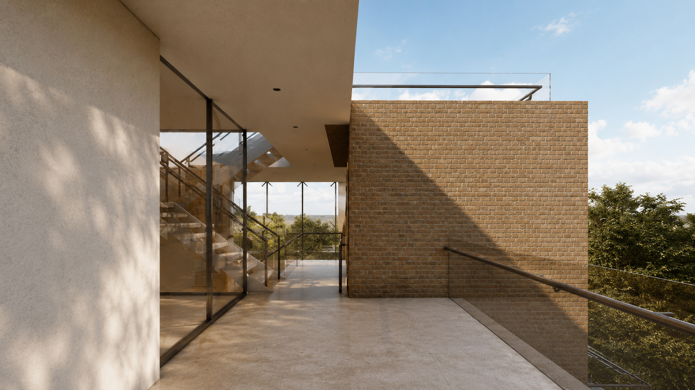
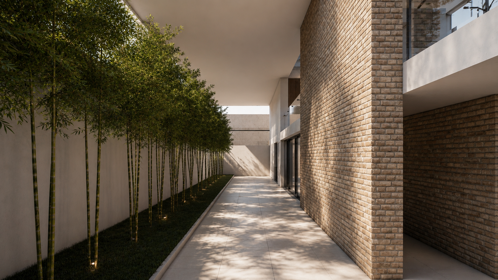
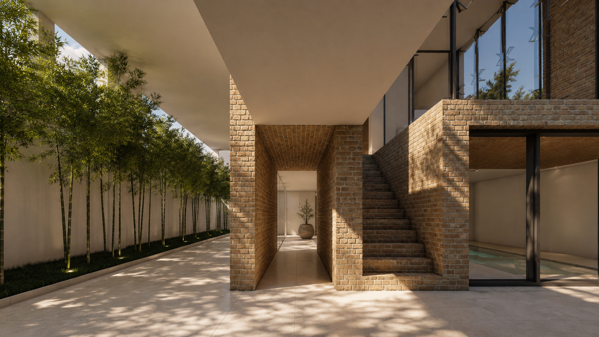

Residential Architecture

Location
Year
Scope
Collaboration
Commissioned by
Villa Frame is conceived around the idea of framing space, light, and landscape through a bold architectural gesture. A monumental brick volume encloses a transparent double-height living space, creating a striking contrast between solidity and openness. Expansive glazing fills the interior with natural daylight while establishing uninterrupted visual connections between the home's different levels and the surrounding gardens. The architecture is defined by a restrained palette of warm brick, crisp white rendered surfaces, and structural glass. These timeless materials highlight the interplay between mass and void, reinforcing the clarity of the composition while allowing light and shadow to animate the façade throughout the day. Carefully positioned openings balance privacy with openness, creating framed views that connect the interior to the landscape beyond. At the heart of the residence, the double-height atrium serves as both a visual and spatial anchor. A sculptural staircase strengthens the vertical connection between floors, while landscaped courtyards and planted terraces introduce greenery deep into the architecture, softening the transition between inside and outside. Through its refined proportions, timeless material palette, and emphasis on light, transparency, and framed space, Villa Frame presents a contemporary home where architecture becomes both a structure and a lens through which its surroundings are experienced.







